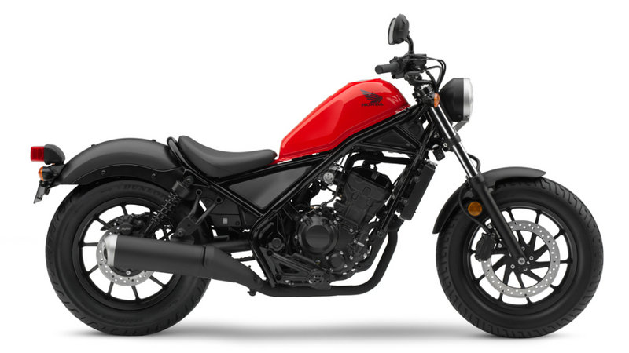
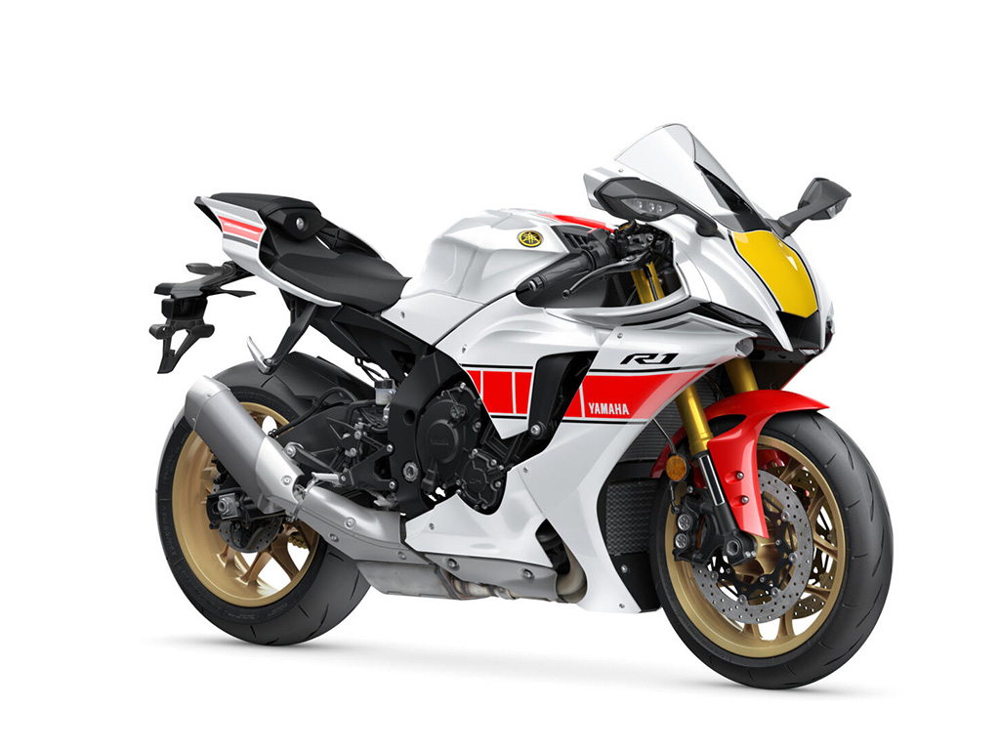

Yamaha rebel

It’s got style, attitude, and authenticity with
the pace to match, that's the Honda Rebel 500.
It has been in the market since 2019, with this model being available with only one ABS variant
which retails at P375,000. Staying true to its back-to-basics ethos, the Rebel 500 has only what
you really need. One of them is a digital gauge that boasts two trip meters, a fuel gauge, a
neutral indicator, a clock, and a speedometer.
Performance comes courtesy of a liquid-cooled, parallel-twin 471cc engine that has two cylinders
and
eight valves. Power and torque are rated at 46 hp and 43 Nm, respectively, with those numbers
put to the wheels via a 6-speed manual transmission.
Safety and security features of the Rebel 500 include an Anti-lock Braking System (ABS)
and a side-stand that switches off the engine and not left running when parked
Yamaha r1

With its latest generation unveiled last 2015 at the centennial EICMA motorcycle show,
the Yamaha YZF R1 1000 is a sport bike which is sure to deliver ample power coupled with
expensive components such as for that extraordinary riding experience. Locally, this beautiful
beast can be had in only one ABS variant retailing at P1,099,000. Color options include Black
Raven
and Race Blue.As mentioned in the previous paragraph, it does get a number of expensive
components
which contributes to its overall dynamics including magnesium wheels and a carbon fiber
bodywork.
It also gets the basics such as LED headlamp, LED tail lamp, and digital gauges Powering this
two wheeler is a mighty 998cc 4-stroke, liquid-cooled,
DOHC engine which churns out a healthy 200 hp and 112 Nm of torque. This mill is then paired
with a six-speed manual.


 Bustos Bulacan
Bustos Bulacan andreinicolas@gmail.com
andreinicolas@gmail.com